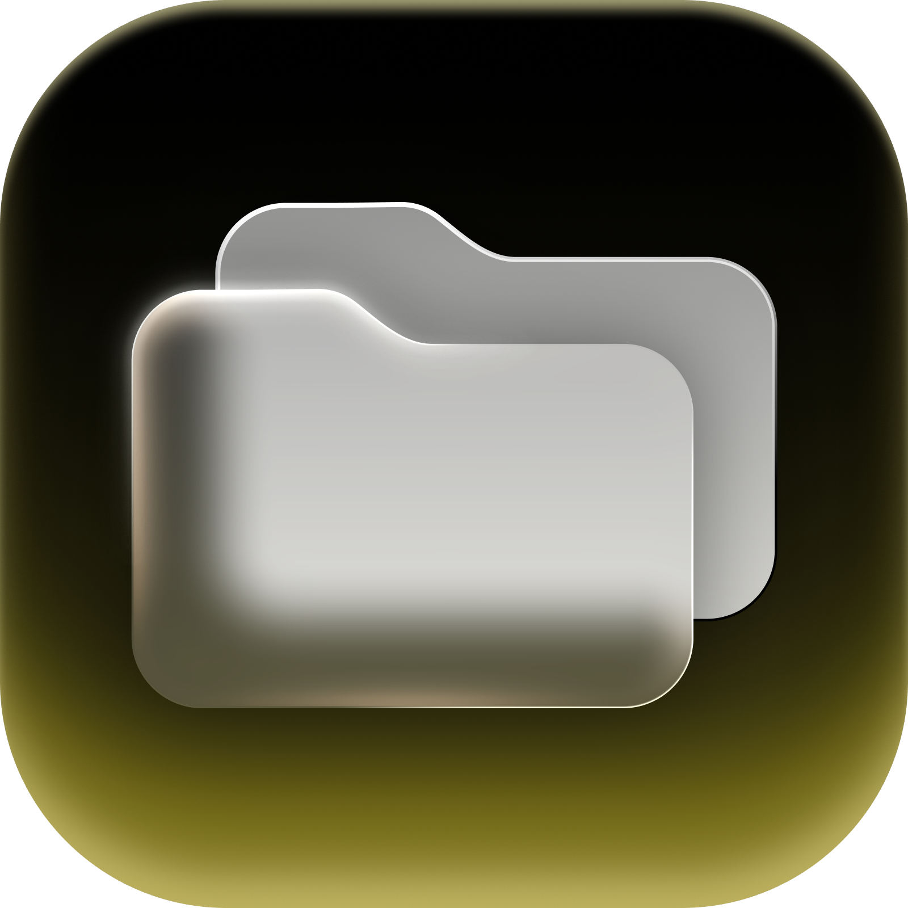

Speicher verstehen
Drille dich visuell durch Ordner und erkenne sofort, wo große Datenmengen liegen.

DiskLoomDiskLoom zeigt dir, was auf Festplatten, SSDs und Medienarchiven wirklich Platz braucht – verständlich, visuell und sicher.
DiskLoom erklärt Auffälligkeiten in normaler Sprache und lässt dich selbst entscheiden.
Von der ersten Übersicht bis zur geprüften Dublette bleibt jeder Schritt nachvollziehbar und unter deiner Kontrolle.
Drille dich visuell durch Ordner und erkenne sofort, wo große Datenmengen liegen.
Vergleiche Kandidaten erst nach Größe und bestätige sie anschließend mit vollständigen Hashes.
Quarantäne, Protokoll und Rückgängig-Funktion schützen vor vorschnellen Änderungen.
Nutze Apples lokales Modell oder optional OpenAI mit deinem eigenen API-Schlüssel.